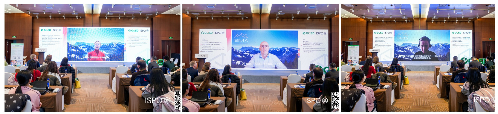
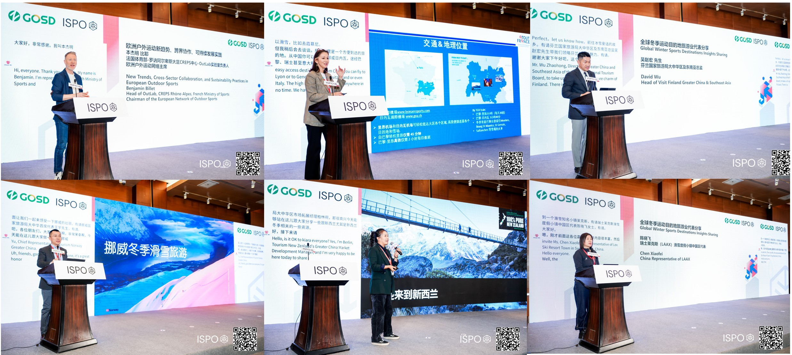
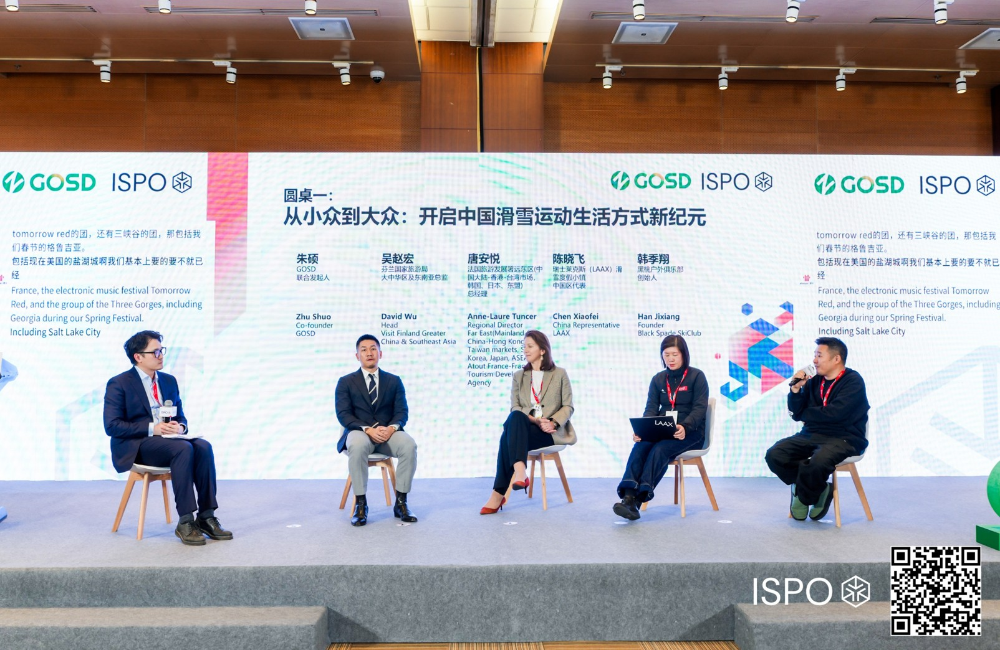
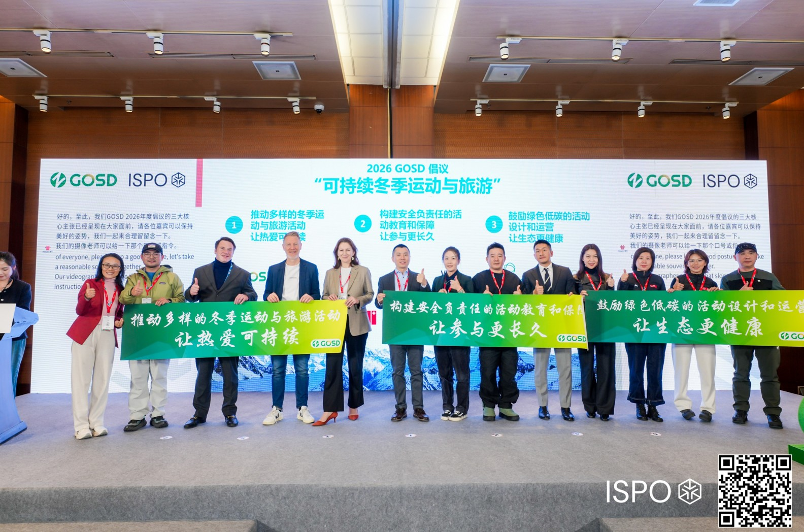

连接全球，洞见未来——2026首届GOSD全球户外运动与旅游目的地发展论坛在京启幕
1月9日，GOSD与ISPO联合主办的 2026首届GOSD全球户外运动与旅游目的地发展论坛在北京国家会议中心隆重举行。本届论坛以"立足中国，连接全球"为宗旨，围绕"冬季运动×旅游×生活方式"核心议题，旨在搭建一个连接中国与全球户外运动及旅游产业的国际化高端合作交流平台，共同探讨与推动可持续户外生态圈的建设。

首届GOSD论坛汇聚了来自全球户外运动与旅游目的地的顶尖影响力人士。论坛邀请到可持续山地联盟（SMA） 的三位核心代表——副主席莎拉·刘易斯（前国际雪联秘书长）、联合创始人皮埃尔·热尔莫与英格丽·比特勒通过视频分享，并正式宣布GOSD与可持续山地联盟（SMA）达成战略合作伙伴关系。双方将携手在可持续赛事认证、创新解决方案孵化及全球最佳实践交流等领域展开深度合作，共同推动户外运动与旅游产业的可持续创新。
欧洲户外运动的代表，法国体育部-罗讷阿尔卑斯大区CREPS中心-OutLab实验室负责人、欧洲户外运动网络主席，本杰明比耶位大家详细地的从历史、社会、人类学等多元角度分享了欧洲户外运动趋势变化、跨界协作的机制、可持续发展的实践案例。
来自多个全球冬季运动胜地的旅游局及目的地代表也齐聚一堂，包括法国体育部法国旅游发展署远东区总经理唐安悦，芬兰国家旅游局大中华区及东南亚总监吴赵宏，挪威国家旅游局大中华区首席代表王宇，新西兰旅游局市场拓展经理柏林，瑞士莱克斯滑雪度假小镇中国区代表陈晓飞等。 此外，国内户外滑雪产业代表与社群代表也深度参与，如冷山体育联合创始人周航、黑桃户外俱乐部创始人韩季翔、旅行作家与美术馆主理人雷涛，以及意大利致意旅行集团亚太区商务总监Davide Mazzocchi等。
论坛设置两大核心圆桌讨论环节，聚焦行业关键议题。圆桌"从小众到大众——开启中国滑雪运动生活方式新纪元"由唐安悦（法国旅游发展署）、吴赵宏（芬兰国家旅游局）、陈晓飞（瑞士莱克斯滑雪度假小镇）与韩季翔（黑桃户外俱乐部）共同探讨。中国用户对于多元的户外活动的需求正在放大，从单一的运动到将运动融合到自己的生活方式中，各位嘉宾分享了中国滑雪市场的大众化路径、消费行为变迁，从赛事、培训、体验与休闲度假、文旅活动等的结合探讨了国际化接轨机遇和实际的目的地与活动组织者合作的落地机会。
圆桌"共筑滑雪安全，让滑雪热爱可持续"深入探讨了安全教育与可持续举措对滑雪产业长远发展的深远影响。在主持人雷涛（旅行作家、高山美术馆主理人）的引导下，王宇（挪威国家旅游局）、周航（冷山体育）、柏林（新西兰旅游局）与刘帆（意大利致意旅行集团）从目的地经验、产业运营与消费者教育等多维度展开对话。嘉宾们分享了各国在建立规范滑雪培训与安全教育体系方面的成熟经验，并探讨了如何在中国市场高速增长期，将安全规范与可持续文化深度植入产业根基，从而规避发展弯路，构建负责任、可长期繁荣的滑雪生态。讨论进一步延伸到可持续运营的具体实践，探讨了如何在能源结构、游客管理、绿色出行与社区共生等方面取得平衡，并向市场证明可持续性并非体验的牺牲，而是更持久、更富责任感的高品质体验保障。

这不仅是一场全球前沿经验与趋势的深度分享会，更是一个激发商业灵感和促成务实合作的珍贵平台。与会者将有机会精准对接全球顶级目的地资源，在赛事引进、培训教育、安全体系、度假产品开发等领域开启全新的合作空间。
论坛期间，组委会正式启动"GOSD联盟"。该联盟旨在凝聚产业各方力量，形成长效合作机制。同时，大会发布了具有行业引领意义的 《2026 GOSD倡议：可持续冬季运动与旅游》 ，明确提出了三大行动方向：
一是推动多样的冬季运动与旅游活动，让热爱可持续。
二是构建安全负责任的活动教育和保障，让参与更长久。
三是鼓励绿色低碳的活动设计和运营，让生态更健康。
此项倡议标志着全行业在践行环保责任、夯实安全基础、推动长期健康发展方面达成了高度共识，并迈出了坚实的一步。作为GOSD框架下的重要落地计划，GOSD依托本次论坛正式开启其系统性服务。面对境外目的地在中国市场"推广分散、对接低效"的痛点，GSOD旨在通过北京、上海等多城市举行的workshop洽谈活动，以及业界教育考察团等多元化形式，集中推广全球优质资源，传播趋势和洞察并赋能中国业界伙伴，实现商业价值的最大化转化。"GOSD希望携手国内外户外运动与旅游目的地管理机构、体育和户外运动机构、旅游局、赛事组织方、培训机构、度假村、服务商及相关品牌企业，无论是对处在蓬勃发展的中国大众户外运动旅游市场，还是海外成熟或新兴的户外运动旅游目的地，相互之间都有着全新的合作增长机会，GOSD希望协助促进双向合作、双向增长。"GOSD发起人房旻表示。
